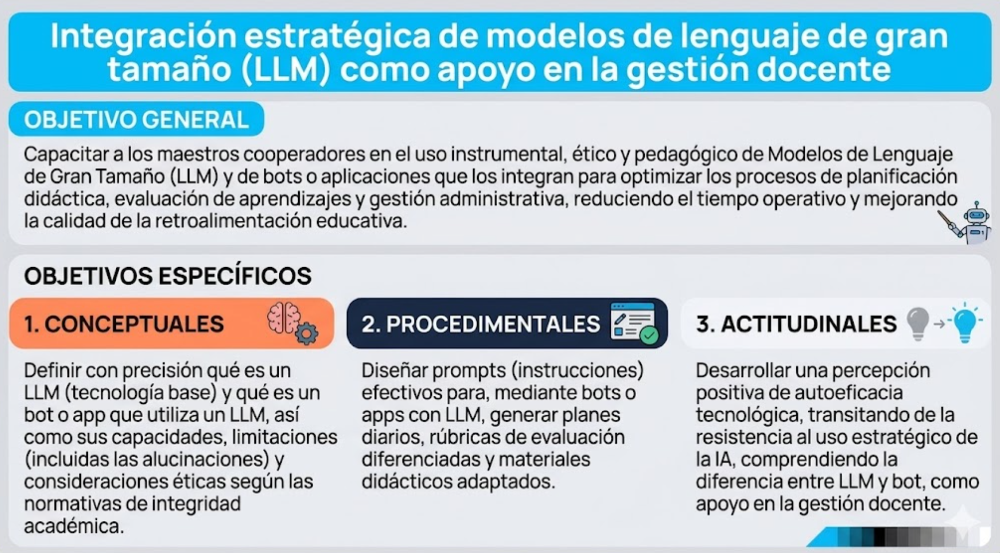

Programa de Formación Profesional en LLM
Objetivo General
Capacitar a los maestros cooperadores en el uso instrumental, ético y pedagógico de Modelos de Lenguaje de Gran Tamaño (LLM) y de bots o aplicaciones que los integran para optimizar los procesos de planificación didáctica, evaluación de aprendizajes y gestión administrativa, reduciendo el tiempo operativo y mejorando la calidad de la retroalimentación educativa.
Objetivos Específicos

![Objetivo General y Objetivos Específicos]
Justificación y Fundamentos Teóricos
Este currículo responde a la necesidad crítica de modernizar la gestión docente y aliviar la sobrecarga administrativa identificada en el sistema educativo de Puerto Rico. Se fundamenta en:
Teoría Sociocultural (Vygotsky)
Los LLM actúan como andamiaje (scaffolding) cognitivo, permitiendo al docente operar en una Zona de Desarrollo Próximo superior en tareas de planificación y evaluación.
Modelo de Aceptación Tecnológica (TAM)
El diseño de los talleres se enfoca explícitamente en demostrar la Utilidad Percibida y la Facilidad de Uso para garantizar la adopción.
Capital Profesional (Hargreaves & Fullan)
Se busca aumentar el capital decisional del docente, liberando tiempo de tareas repetitivas para invertirlo en la pedagogía.
Módulos de Aprendizaje
Cargando módulos de aprendizaje...